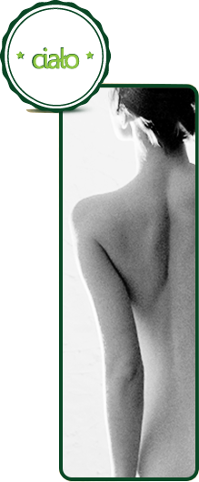

zabiegi na ciało
ENDERMOMASAŻ
CZYLI MASAŻ PODCIŚNIENIOWY
Endermomasaż -jest to połączenie masażu mechanicznego z podciśnieniem z jednoczesnym odciągnięciem fałdy skóry (zassanie) i rolowaniem ruchomymi rolkami.
W wyniku zabiegu następuje likwidacja lub znaczne zmniejszenie cellulitu poprzez rozbicie komórek tłuszczowych oraz w sposób widoczny redukcja obwodu ciała.
Masaż wykonuje się szczególnie w miejscach objętych cellulitem, najczęściej w okolicy ud, brzucha i pośladków.
Zabiegi są całkowicie nieinwazyjne i bezpieczne, wspomagają naturalne procesy zachodzące w organizmie, a także stymulują wytwarzanie endorfin, czyli "hormonów szczęścia", przynosząc relaks i odprężenie.
Zabieg ten prowadzi do zwiększenia jędrności i elastyczności skóry, a efekty widać już po pierwszym zabiegu: skóra jest widocznie zrewitalizowana, bardziej jędrna i gładka.
EFEKT ZABIEGOWY:
- „redukcja” cellulitu (zmniejszenie jego widoczności)
- ujędrnienie skóry
- wysmuklenie sylwetki, wymodelowanie
- odmłodzenie naskórka
- zabiegi te mają charakter relaksujący i doskonale niwelują stres
- przywrócenie prawidłowego metabolizmu
- pobudzenie transportu komórkowego
- zmniejszenie retencji wody poprzez uaktywnienie układu żylnego i limfatycznego
- eliminacja toksyn
- zwiększenie produkcji kolagenu i elastyny
- zmniejszenie objętości głęboko położonych warstw tłuszczu
- odmłodzenie twarzy dzięki zwiększeniu miejscowego mikrokrążenia
- endermologia to również metoda do wspomagania terapii blizn, oparzeń, obrzęków, zwłóknień, bóli kręgosłupa, zapalenia ścięgien czy urazów stawów
Zalety masażu próżniowego (endermomasażu)
- Nieinwazyjność- Zabiegi są całkowicie nieinwazyjne, wspomagają jedynie naturalne procesy zachodzące w organizmie
- U wielu osób po 15-20 zabiegach efekty są porównywalne do efektów chirurgicznej liposukcji.
- Endermologię uważa się na świecie za zabieg numer jeden w zwalczaniu cellulitu i nadmiaru tkanki tłuszczowej!
Endermomasaż
WSPOMAGAJĄCY WPŁYW PODCZAS TERAPII WYWIERAJĄ:
- zdrowe odżywianie,
- aktywność ruchowa
- oraz w celu uzyskania pełnego efektu drenującego wypijanie ok. 2,5 l wody dziennie.
WSKAZANIA do wykonania endermomasażu:
- -zmniejszenie widoczności cellulitu
- - ujędrnianie skóry
- -modelowanie sylwetki
- -pobudzenie fibroblastów do zwiększonej produkcji
- kolagenu i elastyny
- - pobudzanie krążenia
- - łagodzenie bólu
- -wspomaganie leczenia blizn, oparzeń, obrzęków
- -terapia uszkodzeń mięśni, ścięgien, więzadeł
- - bóle kręgosłupa
- -normalizacja napięcia mięśniowego
Czas trwania zabiegu:
20- 40 min w zależności od partii ciała poddanej zabiegowi.
Zabiegi wykonuje się w serii 10- 15 zabiegów, 2- 3 razy w tygodniu. Następnie 1 zabieg w miesiącu dla podtrzymania efektów lub powtórzenie serii.
RADIOFREKWENCJA -FALE RADIOWE:
Radiofrekwencja to najnowocześniejsza metoda bezoperacyjnego modelowania sylwetki i lifting skóry twarzy. Zabiegi wykonywane są przy pomocy głowicy, która emituje fale radiowe zamieniane w ciepło zwiększając przepływ krwi. Następuje obkurczanie i reorganizacja włókien kolagenu oraz wzrasta synteza nowego kolagenu. Dzięki technologii fal radiowych uzyskujemy wzrost napięcia tkanki łącznej oraz wzmożony przepływ płynu obrzękowego tkanki tłuszczowej.
Efekty zabiegu :
- Pielęgnacja skóry- Efekt cieplny w głębokich warstwach skóry stymuluje odnowę struktury włókien kolagenowych. Po zabiegu skóra jest bardziej napięta, miękka i odmłodzona, poprawia się owal twarzy.
- Redukcja zmarszczek wokół oczu i na czole. Odmładzanie skóry.
- Utrata wagi. Wyszczuplanie i kształtowanie sylwetki. Komórki tłuszczowe zostają rozbite, skurczone, a następnie uwolnione. Jednocześnie usuwane są toksyny, poprawiane krążenie krwi i wzmacnia się metabolizm komórkowy.
- Poprawa napięcia skóry brzucha. Kształtowanie sylwetki po porodzie. Wyszczuplanie i kształtowanie sylwetki. Redukcja tkanki tłuszczowej.
- Łagodzenie bólu mięśni, stawów.
Zalety zabiegu:
- Zabieg nie chirurgiczny,
- Nie wymaga zastrzyków,
- Nie powoduje krwawienia,
- Jest bezbolesny,
- Nie prowadzi do powstania ran,
- Nie powoduje blizn,
- Skraca czas leczenia
- Nie wymaga izolacji po zabiegu
- Daje szybkie efekty
- Efekt jest długotrwały
Wskazania:
- lifting twarzy
- lifting okolic oczu
- lifting szyi
- poprawa kondycji zwiotczałej skóry
- usuwanie widoczności zmarszczek na czole
- poprawa napięcia skóry brzucha
- poprawa konturów pośladków i ud
- pielęgnacja dłoni
Przeciwwskazania:
- Rozrusznik serca
- Nowotwory i stany po leczeniu jonizującym (do 5 lat po zakończonym leczeniu)
- Ostre stany zapalne
- Zaburzenia czucia
- Zaburzenia ukrwienia obwodowego
- Gruźlica
- Ciąża
- Karmienie piersią
- Skłonność do krwawień z przewodu pokarmowego
- Zaćma
- Metalowe implanty w okolicy zabiegowej
- Zalecana ostrożność w przypadku zaburzeń hormonalnych (cukrzyca, nadczynność tarczycy) oraz nadciśnienia
W celu uzyskania długotrwałych efektów zabiegi wykonuje się w serii od 5 – 10 zabiegów w odstępach 7 – 14 dni.
Czas trwania zabiegu: 20- 40 minut w zależności od powierzchni poddanej zabiegowi.
MEZOTERAPIA MIKROIGŁOWA FRAKCYJNA
Mezoterapia mikroigłowa frakcyjna to skuteczna technika zabiegowa polegająca na frakcjonowanie (nakłuwanie) skóry mikroigłami. Dzięki temu powstają w naskórku „mikrotunele”, które pozostając otwarte przez krótką chwilę, dają możliwości głębokiego wprowadzenia wybranych preparatów o właściwościach określonych przez potrzeby skóry. Poza tym mikro nakłuwanie powoduje powstawanie mini mikro urazów, które prowokują skórę do reakcji naprawczych, będących podstawą odnowy tkanek.
Działanie mezoterapii mikroigłowej:
- Stymulacja naskórka (intensywna, ale ściśle kontrolowana)
- Natychmiastowy i optymalny transport aktywnych substancji w głąb skóry
- Reaktywacja wszystkich funkcji skóry
- Polepszenie procesów samo naprawczych skóry
- Regeneracja
- Stymulacja produkcji kolagenu i elastyny
Zastosowanie:
Mezoterapia mikroigłowa frakcyjna polecana jest do wielu różnorodnych problemów kosmetyczno - medycznych. W Małym Zielonym SPA posiadamy nowoczesne urządzenie do mezoterapii TRI- M, stosujemy wysokiej jakości ampułki. Jednorazowe kartridże zabiegowe są w pełni higieniczne i bezpieczne dla pacjentów.
Oto zabiegi, które możemy wykonać tą niezwykłą metodą frakcjonowania skóry:
- MICRO NEEDLE IN HYDRA - zabieg nawilżenia skóry
- MICRO NEEDLE IN-REGEN - zabieg odmładzania, regeneracji, likwidacji zmarszczek
- MICRO NEEDLE IN-LIFT - zabieg ujędrniający skórę : twarzy, podbródka, brzucha, wewnętrznych stron ramion, wewnętrznych stron ud. To intensywny lifting zwiotczałej skóry !
- MICRO NEEDLE IN-WHITE – zabieg usuwający przebarwienia, rozświetlający skórę.
- MICRO NEEDLE IN-CELL - zabieg spłycający na cellulit
- MICRO NEEDLE IN-LIPO - zabieg likwidujący na nadmiar tkanki tłuszczowej
- MICRO NEEDLE IN ANTI-STRETCH- zabieg spłycający na blizny i rozstępy
Efekty po zabiegu:
- Redukcja zmarszczek
- Zwiększenie elastyczności skóry
- Odmłodzenie i rozświetlenie skóry
- Wzmocnienie odporności tkanki łącznej
- Poprawa owalu twarzy
- Zmniejszenie blizn i rozstępów
- Zmniejszenie cellulitu i nadmiaru tkanki tłuszczowej
Mezoterapia mikroigłowa frakcyjna to zabieg całkowicie bezpieczny dla pacjenta. Nie ogranicza jego codziennej aktywności. TRI – M to wyjątkowa technologia, która pomaga usunąć wszelkie oznaki starzenia i zapewnić przy tym maksymalny komfort.
Czas trwania zabiegu mezoterapii: od 5- 25 minut w zależności od powierzchni skóry poddanej zabiegowi i ilości przejść frakcyjnych. Po zabiegu na twarz nakładana jest maska algowa lub płat kolagenowy.
W celu uzyskania długotrwałych efektów zabiegi wykonuje się w serii od 5 – 12 w odstępach 7 – 14 dni.
MANUALNY ZABIEG SAMOOPALAJĄCY- FAKE BAKE
Jak długo utrzymuje się opalenizna?
Opalenizna rozwija się przez 6-8 godzin od nałożenia preparatu i utrzymuje się od 7-10 dni w zależności od tego jak jest pielęgnowana skóra.
Przyszłym pannom młodym zalecamy profesjonalne zabiegi opalające na co najmniej 2 dni przed ślubem
Jak przeprowadzany jest zabieg Fake Bake?
Aplikację samoopalacza poprzedza złuszczanie i nawilżanie skóry. Po przygotowaniu i oczyszczeniu następuje nałożenie preparatu brązującego. Podczas peelingu można zastosować specjalne techniki masażu dodatkowo zwiększając standard zabiegu.
Dla kogo?
Zabieg ten przeznaczony jest dla osób pragnących zwolnić tempo, zrelaksować i dać się ponieść pozytywnym doznaniom. Odpowiedni dla kobiet i mężczyzn.
Jest to najbardziej ekskluzywna forma opalania dostępna w salonie.
Jak działają samoopalacze firmy Fake Bake?
Wyjątkowa formuła preparatów samoopalających Fake Bake zawiera najlepsze naturalne składniki brązujące: DHA, Erytrulozę oraz DMI.
Najwyższej jakości DHA w połączeniu ze zwiększającym jego wchłanianie DMI reaguje z aminokwasami powierzchownej warstwy naskórka (warstwa rogowaciejąca), przekształcając się w opaleniznę idealnie dopasowaną do naturalnego odcienia skóry.
Erytruloza rozwija opaleniznę wolniej, przez co efekt utrzymuje się dłużej.
W tym połączeniu składniki zapewniają naturalnie wyglądającą opaleniznę, minimalizując ryzyko powstawania smug i przebarwień. Dzięki nim opalenizna blednie powoli i równomiernie, zachowując naturalny wygląd przez cały czas.


 O NAS
O NAS
 OFERTA
OFERTA GALERIA
GALERIA
 Kontakt
Kontakt